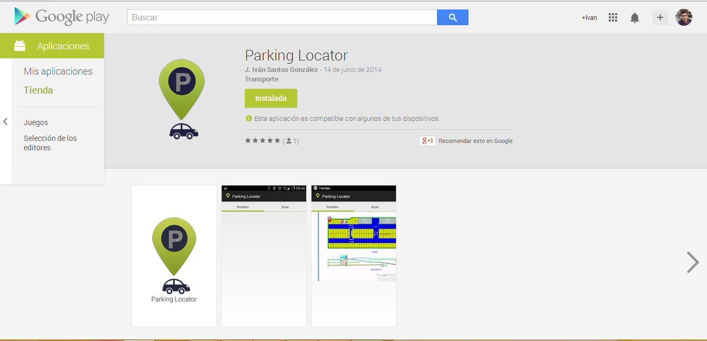

Sistema de localización de vehículos en interiores
Máster en Técnicas para le Investigación, Desarrollo e Innovación en Ciencias e Ingeniería
José Iván Santos González
Directora: Pino Caballero Gil
Índice
- Introducción
- Bluetooth
- Códigos QR
- Sistemas de Posicionamiento en Interiores
- Sistema Propuesto
- Conclusiones
Objetivos
- Estudiar la tecnología Bluetooth y los códigos QR
- Estudiar soluciones anteriores
- Solución para el problema de aparcamientos en interiores
- Aplicación basada en Android
- Aplicación web

Los objetivos principales de este trabajo son en primer lugar estudiar la tecnología Bluetooth y su seguridad asi como estudiar los códigos QR
Además de ofrecer una solución válida e innovadora para el problema del posicionamiento de vehículos en interiores previo estudio de las soluciones que tradicionalmente se han utilizado.
para finalmente desarrollar las aplicaciones web y móvil que tratan de solucionar este problema.
Versiones de Bluetooth
- Bluetooth 4.0
- Low Energy
- Tecnología de bajo consumo
- 25 Mbps
- 60 metros

Hasta llegar a la versión actual, Bluetooth ha pasado por multitud de versiones, incoroporando en cada una de ellas diferentes mejoras y funcionalidades añadidas
La versión actual de Bluetooth es la 4.0 lanzada en el año 2010 y conocida también con el sobrenombre de LE debido a que esta versión incorpora una nueva tecnología de bajo consumo
La velocidad máxima de transferencia de datos a la que puede operar Bluetooth 4.0 se mantiene como en la versión anterior y en condiciones idóneas puede alcanzar 25 Mbps.
Por otro lado, la distancia máxima a la que, en teoría, podrían interactuar dos dispositivos basados en la versi´on 4.0 de Bluetooth se extiende hasta los 60 metros, lo que hace que estas comunicaciones puedan extrapolarse a nuevos tipos de uso en un futuro próximo.
Sistemas de posicionamiento en interiores
- Puntos de acceso Wi-Fi
- Potencia de la señal
- Ángulo de incidencia de la señal
- Tiempo de propagación de la señal
- Combinación Wi-Fi y RFID
- Bluetooth

Tradicionalmente se han utilizado diferentes sistemas para el posicionamiento en interiores.
Algunos de ellos han estado basados en la tecnología Wi-Fi haciendo uso de las características físicas de diferentes puntos de accesos colocados en diferentes lugares como es la potencia de la señal, su ángulo de incidencia su tiempo de progpacion, etc
El principal problema de este tipo de sistemas es que las características medidas no son objetivas, ya que las mismas dependen de la potencia de recepción del dispositivo con el que se mida
Otro problema de estos sistemas es que previo uso de la aplicación hay que hacer diferentes mediciones de estos parámetros para almacenarlos junto a su posición y que luego el problema sea simplemnte de clasificación
Otros sistemas utilizadas han consistido en combinar Wi-Fi con RFID o utilizar Bluetooth de la misma manera que utilizabamos Wi-Fi en el anterior ejemplo. En todos estos casos, los problemas son casi identicos a los comentados anteriormente.
Aplicación web Parking Locator
Aplicación web Parking Locator
¿Cuáles son los objetivos de la plataforma web?
- Centralización de los datos de los aparcamientos
- Permitir la puesta en marcha del sistema en diferentes aparcamientos
- Ofrecer funcionalidades que aporten valor añadido
Los objetivos principales de la aplicación web Parking Locator son: en primer lugar centralizar los datos de los aparcamientos, como lo son su ocupación y su posición
Permitir el registro y puesta en marcha del sistema en los diferentes aparcamientos
Ofrecer funcionalidades que aporten valor añadido como es la visualización en el plano de los puestos libres y ocupados para así ganar clientes potenciales
Aplicación web Parking Locator
Funcionalidades de la aplicación
- Registro/inicio de sesión
- Subida de planos de aparcamientos
- Visualización de planos de aparcamiento
- Creación de códigos QR para aparcamientos
- Visualización de plazas libres y ocupadas
Las principales funcionalidades de la aplicación web son las siguientes:
Registro e inicio de sesión, en este sentido cabe destacar que la aplicación permite el registro de usuarios, pero los usuarios no podrán hacer uso de la aplicación hasta que el administrador acepte su registro
Además cabe destacar que por motivos de seguridad las contraseñas son almacenadas en el servidor tras aplicarle la función hash sha-3, de este modo aunque un usuario malintencionada pudiera acceder a las mismas no podría descifrarlas
Otras funcionalidades son la subida y visualización de planos ya que es el primer paso para poner en funcionamiento el sistema
Finalmente se puede también generar automáticamente el código QR de una plaza de aparcamiento y visualizar las plazas libres y ocupadas de un aparcamiento
Aplicación web Parking Locator
Herramientas utilizadas
- Node.js
- Express.js
- Angular.js
- Mongodb
- Bootstrap


La aplicación web Parking Locator ha sido realizada utilizando el lenguaje javascript tanto en el lado del cliente como en lado del servidor haciendo uso de los frameworks node.js, express.js, angular.js, mongoDB para la base de datos y Bootstrap en el diseño
Aplicación web Parking Locator
Disponible en www.parkinglocator.ama-think.com
La aplicación web Parking Locator ha sido puesta en producción en un servidor gratuito proporcionado por amazon y se encuentra disponible en la dirección ParkingLocator.ama-think.com
Aplicación móvil Parking Locator
A continuación vamos a hablar de la applicacion movil Parking Locator, la cual ha sido desarrollada en Android debido a que es sistema operativo móvil predominante hoy en día y con el cual podemos llegar a una mayor cantidad de potenciales usuarios
Aplicación móvil Parking Locator
Funcionalidades de la aplicación
- Localización de nuestro vehículo
- Visualización de nuestra posición en relación a la del vehículo
- Marcar como ocupadas o libres las plazas de aparcamiento
Las funcionalidades que ofrece la aplicación móvil Parking Locator son las siguientes:
La primera funcionalidad y razón de ser de la aplicación es la localización de vehículos
La segunda funcionalidad es la visualización de nuestra posición en relación a la posición del vehículo
La tercera y ultima funcionalidad importante es marcar como libres u ocupadas las plazas de aparcamiento
Aplicación móvil Parking Locator
Plataforma y herramientas de desarrollo
- Eclipse
- Android SDK
- GIT
- Depuración en dispositivo físico
Metodología de desarrollo
- Modelo incremental de desarrollo de software

La plataforma de desarrollo de la aplicación es, como hemos comentado antes, Android y para ello hemos utilizado el entorno de desarrollo eclipse con el sdk de Android, git y un dispositivo físico para la depuración
Además hemos seguido un modelo incremental de desarrollo del software de manera que en cada iteración teníamos una versión funcional de la aplicación a la que se iban añadiendo funcionalidades
Aplicación Parking Locator
Publicación en Google Play
Finalmente y tras pasar el proceso de evaluación por parte de Google nuestra aplicaci´on Parking Locator se encuentra disponible en Google Play
Aplicación Parking Locator
Demostración de uso
Finalmente y tras pasar el proceso de evaluación por parte de Google nuestra aplicaci´on Parking Locator se encuentra disponible en Google Play
Conclusions and Future Work
- Help drivers
- Indoor parkings
- Monitorization
- Bluetooth and QR codes
- Parking Locator app
- Increase the security level
- Offer of new value-added features
- Improve the system with user's opinion
During this work the main objective was the development of an application to help those drivers that use indoor parkings through the automatic monitorization of data about busy parking places and an orientation service to the driver with respect to his vehicle. The developed solution consists on a web application and a mobile application that uses Bluetooth and QR codes in a secure way.
The future work about this systems consist on:
Increase the security level of the developed application through its verification by applying the different attacks we studied in this work, its test with real users, and the implementation of the most adequate security solutions.
Offer new value-added features to parking’s managers to try to attract more interest towards the use of the proposed system.
Improve the system adding new features according to the user's opinion.
Gracias por su atención
Preguntas
José Iván Santos González
Sistema de localización de vehículos en interiores